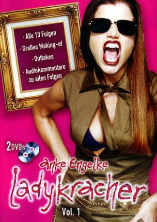
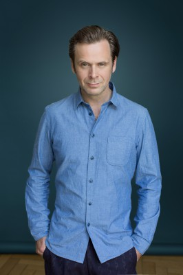

 
 IMDB-Wertung: 6.0 / 10
IMDB-Wertung: 6.0 / 10  Metascore: 0
Metascore: 0 
In verrückten Momentaufnahmen beleuchten Anke Engelke und ihr Team den Großstadtalltag von Frauen zwischen Handy, Liebeserklärung und Kindergeburtstag – witzig, schnell, originell. Ob in Bus und Bahn, an Tresen und Tanke, auf Partys, beim Shopping oder im trauten Heim: Kein Ort, keine Situation ist vor den Machern von „Ladykracher“ sicher.
Jahr: 2002
Dauer: 20 Minuten
FSK:
Land: Deutschland Studio: Sat.1Tonspuren:
Untertitel:
Auflösung: SD (640x480) Größe: 331 MB
Genre: Komödie, TV-Serie
Regisseur: Jan Markus Linhof, Tobi Baumann, Erik Haffner, Catharina Niens-Klees, Christoph Schnee
Drehbuch: Sascha Albrecht, Markus Barth, Morten Kühne, Mark Welte, Attik Kargar
Soundtrack:
Darsteller:
 Anke Engelke als Various Roles, 86 episodes, 2002-2012
Anke Engelke als Various Roles, 86 episodes, 2002-2012- Kai Lentrodt als Various Roles, 57 episodes, 2002-2012
-  Matthias Matschke als Various Roles, 47 episodes, 2008-2012
- Bettina Lamprecht als Various Roles, 46 episodes, 2002-2011
- Lena Dörrie als Various Roles, 44 episodes, 2008-2012
 Christoph Maria Herbst als , 13 episodes, 2002-2008
Christoph Maria Herbst als , 13 episodes, 2002-2008- Judith Richter als Various Roles, 11 episodes, 2012
- Lena Meyer-Landrut als Dina, 2 episodes, 2011
- Funda Rosenland als Schülerin, 1 episode, 2008
 Friederike Kempter als Various Roles, 47 episodes, 2008-2012
Friederike Kempter als Various Roles, 47 episodes, 2008-2012- Charly Hübner als Various Roles, 46 episodes, 2008-2012
- Holger Stockhaus als Various Roles, 46 episodes, 2008-2012
- Daniel Wiemer als Various Roles, 46 episodes, 2008-2012
- Peter Nottmeier als , 10 episodes, 2002
- Julia Stinshoff als , 10 episodes, 2002
- Daniela Preuß als Various Roles, 8 episodes, 2009-2010
- Thomas Gimbel als , 3 episodes, 2002
- Dana Golombek als , 3 episodes, 2002
- Guido Hammesfahr als , 3 episodes, 2002
- Katja Liebing als , 3 episodes, 2002
- Sam Gerst als Benni, 3 episodes, 2011-2012
- Ill-Young Kim als Man in Café, 2 episodes, 2009-2010
- Marco di Marco als Cliche' Italiener, 1 episode, 2002
- Haydar Zorlu als Tebatebai, 1 episode, 2002
- Carolin Kebekus als Vorious, unknown episodes
- Andrea Brix als (2003) (uncredited), unknown episodes
- Dennis Landman als Komparse (2004) (uncredited), unknown episodes
Datei: X:\Dokumentationen\Comedy\Ladykracher\S01\Ladykracher S01E01 Teletussi.mkv seit 06.07.2019
Festplatte: HD Serien(SU-Z)+Dokus+Musik
 Es gibt insgesamt 30 Filme in der Gruppe 'Dokumentationen\Comedy'
Es gibt insgesamt 30 Filme in der Gruppe 'Dokumentationen\Comedy'
")